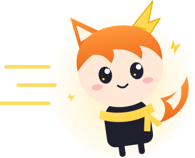

new{ T[lang].badge }
{ T[lang].h1a }
{ T[lang].h1a }
{ T[lang].h1b }
{ T[lang].sub }
$ bun create raiko
{ T[lang].cta }
107tests
3.4M+fuzz checks
5runtimes
7frontends
0runtime deps
TypeScript, end to end
{ T[lang].codeTitle }
{ T[lang].codeSub }
import { Raiko, t } from 'raiko.js'
import { cors, rateLimit } from 'raiko.js/plugins'
const app = new Raiko()
.use(cors({ origin: ['https://my.app'], credentials: true }))
.use(rateLimit({ max: 100 }))
// one schema: validation, types and OpenAPI docs
.post('/users', ({ body, status }) => status(201, { id: 1, ...body }), {
body: t.Object({ email: t.String({ format: 'email' }), name: t.String({ minLength: 2 }) }),
})
.get('/users/:id', ({ params }) => ({ id: params.id }))
export default app // Bun, Node, Deno, Workers, Vercel
import { notFound } from 'raiko.js/server'
import { db } from '../../../db'
export const revalidate = 60 // cached for a minute, like Next.js ISR
export const roles = ['editor'] // only signed in editors
export async function generateMetadata({ params }) {
return { title: params.slug }
}
// a server component: async, reads the database, ships zero JS
export default async function Post({ params }) {
const post = await db.posts.findUnique({ where: { slug: params.slug } })
if (!post) notFound()
return <article><h1>{post.title}</h1></article>
}
import { client } from 'raiko.js/client'
import type { App } from '../server'
export const api = client<App>('')
// path, params, body and response are all typed from the server
const { data, error } = await api.post('/users', {
body: { email: 'ana@raiko.dev', name: 'Ana' },
})
// error.status is 422 with the exact field when validation fails
import { t } from 'raiko.js'
// WebSocket at /chat: validated, AES-GCM encrypted, rooms built in
export default {
body: t.Object({ text: t.String({ maxLength: 500 }) }),
encrypt: true,
open: (ws) => ws.subscribe('lobby'),
message(ws, msg) {
ws.publish('lobby', { from: ws.id, text: msg.text })
},
}
Batteries included
{ T[lang].featTitle }
{ f[0] }
{ f[1] }
Compare
{ T[lang].cmpTitle }
{ T[lang].cmpSub }
| Raiko.js | Elysia | Next.js | Hono | |
|---|---|---|---|---|
| Runtimes | Bun, Node, Deno, Workers, Vercel | Bun first | Node, Vercel | All |
| App router, layouts, loading, error | Yes | No | Yes | No |
| Server components | Yes, no React needed | No | Yes | JSX only |
| Typed client from the server | Yes | Yes (Eden) | Server actions | Yes (RPC) |
| WebSockets on every runtime | Yes, own RFC 6455 on Node | Bun | No | Per adapter |
| Encrypted WebSocket messages | AES-GCM, replay safe | No | No | No |
| Auth with OAuth and 2FA | Built in | Plugins | NextAuth | Middleware |
| Admin panel with role permissions | Built in | No | No | No |
| Email templates with preview | Built in | No | No | No |
| Raw API throughput | See benchmarks | Very high | Low | Very high |
| Ecosystem size | New | Growing | Huge | Large |
Benchmarks
{ T[lang].benchTitle }
{ T[lang].benchSub }

{ T[lang].benchNote }
create-raiko
{ T[lang].instTitle }
{ T[lang].instSub }
$ bun create raiko my-app
? Frontend Raiko Pages + Voodoo.js
? CSS Monsoon
? Icons glyphfox
? Database ORM Kastor on SQLite
? Sign in Email and password, GitHub
? Two factor auth Yes
? Email provider Resend
? Translations en, pt-BR, es, fr, de
? Admin roles editor, support
? Cookie banner LGPD
? Deploy Vercel
ok writing 41 files
ok installing with bun
role users posts
admin all all
editor ---- read ------ ------ ------ list read create update ------
support ---- read ------ update ------ ---- read ------ ------ ------
done. cd my-app && bun run dev
Deploy
{ T[lang].runTitle }
BunNode.jsDenoCloudflare WorkersVercelDockerFly.ioRailway
Open source